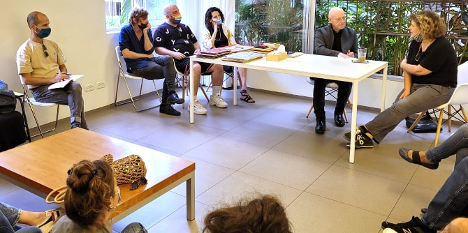
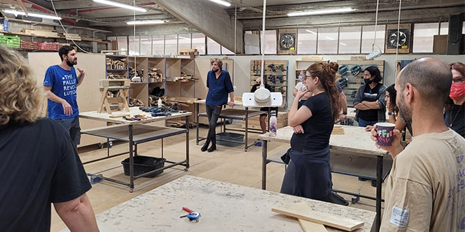

"כאשר אין מה שיעצור את המבט שלנו, המבט שלנו נישא רחוק מאוד. אבל אם הוא לא נתקל בכלום, הוא לא רואה כלום; הוא לא רואה אלא את מה שהוא פוגש..." ז'ורז' פרק, חלל וכו': מבחר מרחבים
כחלק ממהלך עיבוד וסיכום של יחידת לימוד שעסקה בתרבות חזותית ובכוחה לחולל שינוי, יצאנו – עמיתי ועמיתות מחזור ד' בתוכנית מנדל למנהיגות תרבות בנגב ומובילות התוכנית פרופ' דנה אריאלי וד"ר חגית דמרי – לריטריט חוקר בן יומיים.
תרבות חזותית היא תחום עיון וביקורת העוסק בכל מה שנגלה למבט. חקר התרבות החזותית מתמקד במרחב הנראה, אבל גם במנגנונים הלוקחים חלק בהבנייתו. הנחת היסוד של התחום היא שפעולת המבט אינה ניטרלית, אלא מתווכת על-ידי גופי ידע, מאבקי כוח, תשוקות ואידאולוגיות שמבקשים להטעין את החזותי במשמעויות שונות ומשתנות.
התחלנו את הריטריט במכון ויצמן למדע, שם למדנו על האופן שבו מנסח המכון את היחסים בין מדע והמוסד המדעי ובין החזותי. תוך שיטוט בשבילי המכון התבוננו בגינון, בפיסול הסביבתי, בטיפוגרפיות המתנוססות על הבניינים ובעיצוב חללי המעבדות. סיור אדריכלי שהתחיל בביתם של ורה וחיים ויצמן הפגיש אותנו עם הסגנון הבין-לאומי של האדריכל אריך מנדלסון, עם מבנים ברוטליסטיים ועם בנייני זכוכית מהמאה ה-21. בשיחה עם אוצר האמנות של המכון יבשם עזגד נחשפנו למדיניות מרתקת המבקשת להפגיש בין המדע לאמנות ובין מדענים ומדעניות לאמניות ואמנים.
 העמיתים במכון ויצמן למדע
העמיתים במכון ויצמן למדע
מרחובות המשיכה הקבוצה לכיוון תל אביב, לעיון בסדרה של היגדים חזותיים המגלמים יחסים שונים בין מרכיבי זהות ושאלות חברתיות ופוליטיות. ביקרנו בתערוכה שמנסה להרחיב את גבולות המושג "משבר האקלים" כך שיוכל לשמש ככלי מטאפורי לעיסוק בשאלות של אקלים מגדרי. השיחה עם אוצר התערוכה
ארז ביאלר התמקדה בייצוגים של הגוף הגברי באמנות עכשווית. באותו ערב, על גג בניין הגלריה, פגשנו גם את הפרפורמרית ומעצבת האופנה
קיי לונג לשיחה על היחסים שבין אופנה, זהות, פריפריה ומרכז.
בבוקר היום השני בתל אביב ביקרנו בסטודיו של
גרי גולדשטיין – אמן שהתחביר הוויזואלי של יצירותיו נשען על כרזות קולנוע ישנות, שלטי חוצות ותנועות ציוריות כמו הפופ, הסוריאליזם והדאדא. גולדשטיין, שנולד בדרום ארצות הברית ובילה את ילדותו בקונטיקט עם הוריו ניצולי השואה, מתאר את עבודותיו כניסיונות מתמידים לעבד את השדים והצללים שמגיחים מתוך זוועות העבר המשפחתי שלו.

העמיתים בסטודיו של גרי גולדשטיין
מהאישי והאינטימי המשכנו להתבוננות בהיגדים חזותיים שנוצרים במרחב הציבורי. יצאנו לסיור בהובלת הצלמת ורד נבון, אשר הובילה מאבק להצלת 40 עצי פיקוס בשדרת ירושלים שביפו – מאבק שנשען על מחקר תצלומים ישנים של השדרה. המפגש עם השדרה, עם באיה ועם הגאולוגיה האדריכלית שעוטפת אותה, הטעינו את הקבוצה בתובנות על הזיקות שבין החזותי למיתוסים לאומיים, ערגה רומנטית ואינטרסים כלכליים.
סיימנו את הריטריט בביקור במתחם העיצוב החברתי שבבת ים – אתר עיצוב חברתי המכיל מפעל שיקומי, חצר חברתית וחממת מעצבים הפועלת בשיתוף עם מפעלי השיקום. לירון הרשקוביץ, מנכ"ל עמותת "לצאת מהקופסא", שהוביל את פיתוח המתחם, שוחח איתנו על עיצוב ככלי מניע לשינוי כלכלי, חברתי ותרבותי. בסטודיו "מולט" הממוקם במתחם הכרנו את המושג מִחדוש (מחזור ושדרוג – upcycle) והתנסינו בהפיכת משטחי עץ לספסלים, עציצים וצעצועים.
במסגרת יחידת הלימוד שעניינה תרבות חזותית עסקה הקבוצה בדרכים שבאמצעותן מאשררים משטרי מבט שונים את המובן מאליו. הריטריט זימן לנו שלל הזדמנויות לשבש את תנועת המבט ולחשוב על השיבוש כצעד ראשון והכרחי בדרך לניסוח שינויים חברתיים מיטיבים.

בסדנת עץ בסטודיו של "מולט"
{kind=link}
{kind=link}